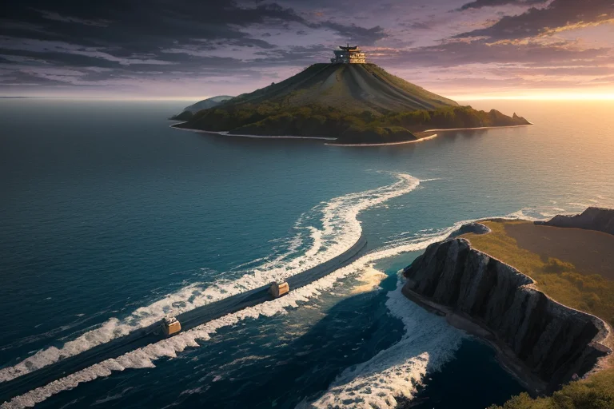
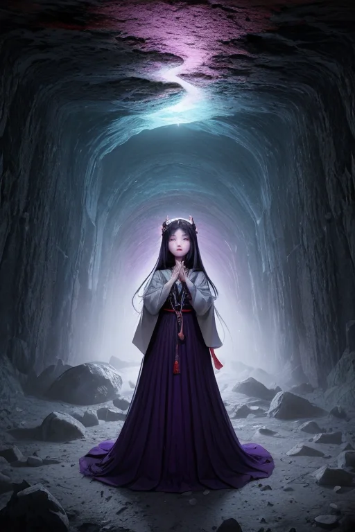
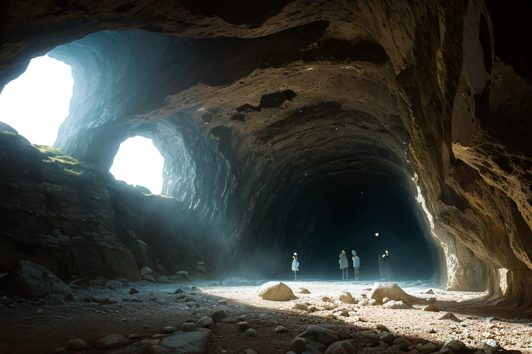
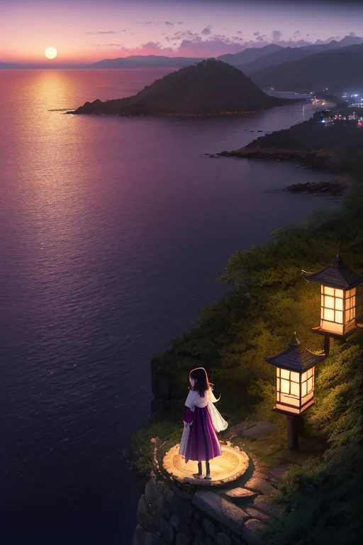
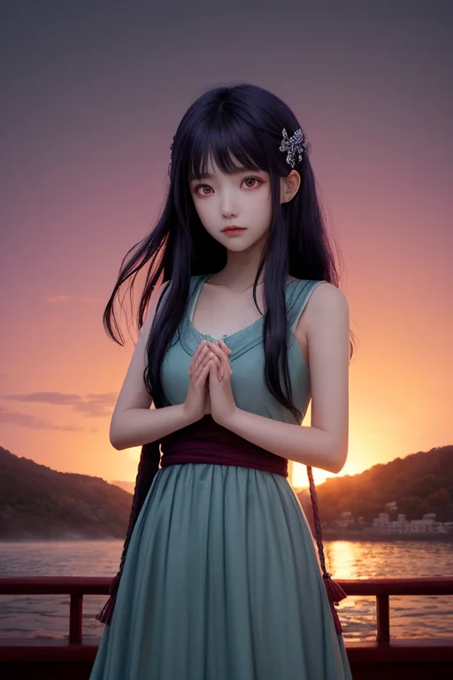

第一章 現実の島根
あなたはまだ気づいていない。この土地にも、王がいることを。
日本海の荒波が、隠岐の島々の岩肌を洗う。ここは境界の地だ。大陸と列島の狭間、神話と歴史の接点。松江城の天守が宍道湖の夕映えを静かに見つめるその時も、地中ではプレートがゆっくりと歪みを蓄えている。石見銀山の坑道は、世界と日本を繋いだ銀の流通が止まった後も、深い闇の中で微かな軋みを続けていた。
その歪みを、誰かが調整している。地震の波が伝わるほんの一瞬前、波長を僅かに変え、岩盤の軋む音を半音低く抑える。津波が沿岸に到達するその数秒、水の粒子の動きにほんの少しの「間」を織り込む。それは消すことのできない現実を、ほんの少しだけ、受け入れやすい形に整える作業である。
紫と金の微光を纏った影が、出雲大社の巨大な注連縄の下、あるいは宍道湖岸でしじみを採る老夫婦の傍らに、ふと現れては消える。その目は、湖面のように深く、すべての「縁」の糸を見通している。
境界に生きる者たちは、海の気まぐれも、大地の怒りも、あるいは突然の出会いも、全てを「縁」と呼んできた。では、その縁は、ただの偶然の積み重なりなのか。それとも、どこかで紡がれている必然なのか。王は、その問いを抱きながら、今日も境界線を歩く。

第二章 歪みの兆候
石見銀山の坑道は、深い闇と静寂に包まれていた。かつて世界を揺るがした銀の脈は枯れ、今は観光客のささやきが時折、岩肌に反響するだけだ。しかし、王の目には、この地底に蓄積された「重み」が見えていた。長い採掘の歴史が地層に刻んだ負の記憶。それは微かな振動として、列島の歪みに共鳴しようとしていた。
「外からの波が、強まっています」
ミスティラが、勾玉を煌めかせながら囁いた。遠く離れた海溝のプレートの軋みが、この銀山の古傷を刺激する。必然の地質現象が、歴史という偶然の傷跡に作用する。その複雑な共鳴を、王は指先でなぞるように感じ取る。
境界線は常に揺らぐ。外と内、過去と現在、必然と偶然。その狭間で、ほんの少し、共振の角度を変える。銀山の坑道に溜まる重い空気を、ほんのわずか、別の坑道へと逃がす。災害を消すことはできない。ただ、偶然が重なる先にある、最も過酷な「必然」の結び目を、一つほどき、結び直すだけだ。

第三章 王の葛藤
石見銀山の坑道は、歪みの波を吸い込む深い呼吸を続けていた。イズモリアは、指先に伝わる地脈の軋みを感じながら、一つの問いを繰り返していた。この揺れは、必然の地質現象か。それとも、数百年にわたる人々の営みが紡いだ、偶然の連鎖の果てか。
「王よ、調整は完了しました」
ミスティラの声は、いつになく静かだった。妖精たちは、王の内側に生じた新たな「歪み」を感じ取っている。それは感情という名の共振だ。かつては、データと確率の網目のように世界を捉えていた。必然と偶然は、計算可能な事象の両端に過ぎなかった。しかし今、島根の風に神話の息吹を感じ、出雲そばの湯気に人々の祈りを見る時、その境界は曖昧になる。
縁とは何か。必然だけが積み重なってできた道筋か。それとも、無数の偶然が、まるで意志を持つかのように紡ぎ合った糸か。彼はかつて、前者を信じていた。今、彼は知る。この地で出会う全てのもの――傷ついた銀山も、神在月に集う神々の気配も、隠岐の島に打ち寄せる波も――全てが、必然であり偶然であるという、矛盾した真実を。
彼は微調整を続ける。必然を捻じ曲げず、偶然を無理に導かず。ただ、その出会いが、ほんの少し優しい角度で交わるように。王は、自らがその「縁」の一部であることを、受け入れ始めていた。

第四章 妖精との対話
松江城天守の窓辺で、ミスティラは遠く日本海を眺めていた。夕闇が迫る海は、紫と金の勾玉を溶かしたような色に染まる。
「王よ、あなたは『縁』を微調整なさる。しかし、調整できるのは『角度』だけです」彼女の声は、神在月の夜風のように静かだった。「出会いそのものを創り出すことも、確実に結びつけることも、私たちにはできません。石見銀山が世界と『縁』を結んだのも、あの銀の脈が偶然発見されたから。でも、発見される『必然』が地中に眠っていた」
イズモナが傍らに現れ、掌で小さな光の輪をいくつも浮かべた。それらはゆらめき、触れ合い、離れていく。
「この輪のように、全ての出会いは独立した偶然です。でも……」イズモナがそっと息を吹きかける。輪はふわりと動き、ほんの少し長く触れ合った。「微調整は、その触れ合う『時間』を、ほんの一瞬、慈しみ深くできる。別れを無くすことはできなくても、別れ方が……ほんの少し、優しい記憶として残るように」
王は黙って聞いた。必然と偶然は、二本の撚り糸のように、解きほぐしようもなく紡がれている。彼の役目は、その糸が絡まる瞬間、ほんの少しの緩衝を与えること。縁そのものではなく、縁が結ばれる「その時」の質を、微かに整えることなのだ。
海の向こう、隠岐の島に灯りが一つ、また一つと灯り始めた。

第五章「微調整と余韻」
隠岐の島の港に、夕刻の定期船がゆっくりと着岸した。観光シーズンは過ぎ、降りてくる人影はまばらだ。その中に、島を離れて十年ぶりに帰省する女性の姿があった。彼女は、幼い頃に海に落ち、奇跡的に助かった記憶を、曖昧な悪夢のように覚えていた。その時、波間で見た淡い紫の光のことを。
王は埠頭の片隅に立っていた。彼の目は、女性の足元にほんのわずかに寄せる波の動きを見つめている。妖精イズモナが、波打ち際でかすかにきらめき、船の係留ロープが風で揺れる角度を、ほんの数度調整した。それは、女性が躓くかもしれない小さな石を、波がさりげなく洗い流すための調整だ。必然か偶然か。彼女がこの島に帰ってくることは必然だった。だが、その一歩が軽やかであるかどうかは、偶然が支配する領域だ。王は、その偶然に、ほんの少しの「縁」を添える。
彼女は無事に岸を踏みしめ、懐かしい潮の香りに深呼吸した。その吐息は、かつて彼女を飲み込もうとした海へと還っていく。別れと帰還。喪失と再生。すべては境界の上でゆらめく縁だ。王はそれを見届け、静かに踵を返した。調整は終わった。残るのは、調整された世界の、ごく自然な余韻だけである。
あなたの町にも、王がいる。